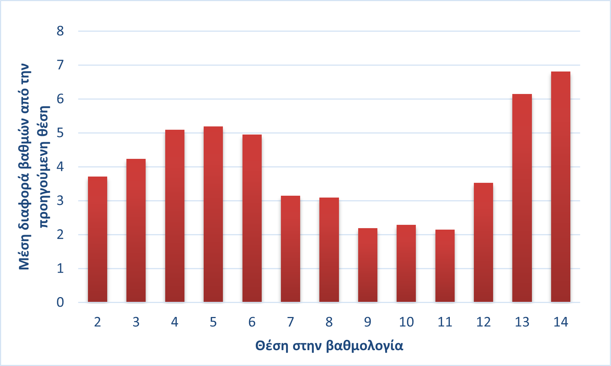
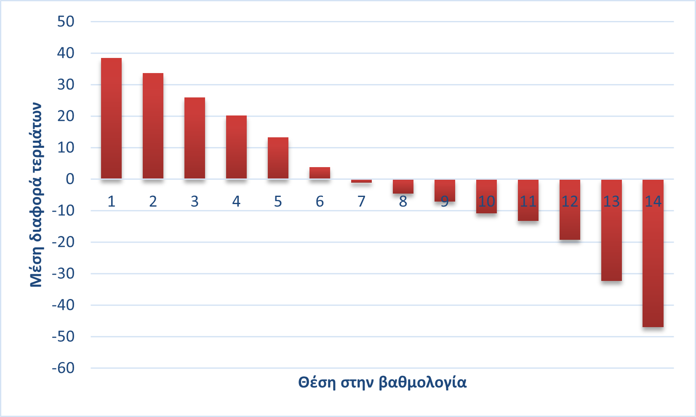

Πρωτάθλημα 12 ή 14 ομάδων; Μέρος Β: Πως οι τελευταίοι δυο στην βαθμολογία
Όπως αναδείξαμε σε προηγούμενη ανάλυση, ένα πρωτάθλημα με 12 ομάδες παρουσιάζει αισθητά μεγαλύτερη ανταγωνιστικότητα σε σχέση με ένα πρωτάθλημα 14 ομάδων. Ο βασικός λόγος για αυτό είναι πως συνήθως υπάρχουν μία ή δύο ομάδες που αδυνατούν να σταθούν στο επίπεδο της πρώτης κατηγορίας. Αυτές οι ομάδες όχι μόνο τερματίζουν στις τελευταίες θέσεις, αλλά και αδυνατούν να φανούν ανταγωνιστικές στις αναμετρήσεις τους με τις υπόλοιπες ομάδες. Για να ανάλυσουμε αυτό το φαινόμενο, πήραμε τις τελικές βαθμολογίες της κανονικής φάσης σε πρωταθλήματα 14 ομάδων από το 2000 έως το 2025. Συγκεκριμένα, υπολογίσαμε τη μέση διαφορά σε βαθμούς ανάμεσα σε διαδοχικές θέσεις (1ος με 2ο, 2ος με 3ο κ.ο.κ.). Το αποτέλεσμα απεικονίζεται στο πρώτο γράφημα.
Αρχικά, παρατηρείται ότι η μέση διαφορά βαθμών μεταξύ 1ου και 2ου είναι περίπου 4 βαθμοί, ενώ η μέση διαφορά μεταξύ 2ου και 3ου είναι παρόμοια. Αυτό σημαίνει ότι στις περισσότερες περιπτώσεις, ο 3ος καλείται να καλύψει κατά μέσο όρο 8 βαθμούς στα play-off για να διεκδικήσει το πρωτάθλημα, κάτι εξαιρετικά δύσκολο. Αντίστοιχα, στο κάτω μέρος της βαθμολογίας από τη 12η έως τη 14η θέση, οι διαφορές αυξάνονται δραματικά. Η 13η ομάδα απέχει κατά μέσο όρο πάνω από 9 βαθμούς από την 11η, δηλαδή τη ζώνη ασφαλείας. Χειρότερα για την 14η ομάδα που χρειάζεται να καλύψει κατά μέσο όρο πάνω από 17 βαθμούς για να αποφύγει τη διαβάθμιση, κάτι σχεδόν αδύνατο. Στο δεύτερο γράφημα πιο κάτω, παρουσιάζεται η μέση διαφορά τερμάτων ανά θέση για τις ίδιες σεζόν. Και εδώ επιβεβαιώνεται το φαινόμενο: οι δύο τελευταίες ομάδες δεν χάνουν απλώς, αλλά χάνουν βαριά, με μεγάλες διαφορές σκορ. Αυτό υποδηλώνει τεράστια αγωνιστική απόσταση από τις υπόλοιπες ομάδες.
Τα δεδομένα αυτά αποδεικνύουν ότι ένα πρωτάθλημα 14 ομάδων οδηγεί σε χαμηλότερη ανταγωνιστικότητα. Οι δύο τελευταίες ομάδες, στις περισσότερες περιπτώσεις, δεν είναι ικανές να διεκδικήσουν με αξιώσεις την παραμονή τους, ούτε να φέρουν ενδιαφέρον στα play-out.
Ημερομηνία δημοσίευσης: 01 Ιουνίου 2025